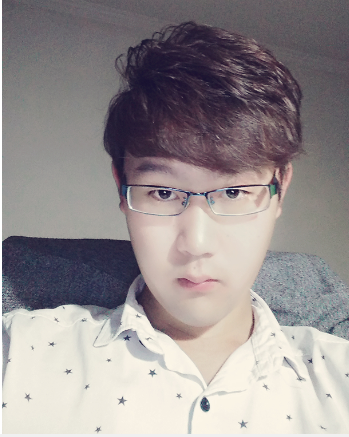

| 基本资料 | ||||||
|---|---|---|---|---|---|---|
| 姓名 | 李XX | 性别 | 男 |  | ||
| 出生年月 | 1994.12.30 | 政治面貌 | 党员 | |||
| 学历 | 本科 | 第二语言 | 英语 | |||
| 联系电话 | 1351351356 | QQ邮箱 | 123456789@qq.com | |||
| 所获证书 | 计算机4级证书 英语四六级证书 工程师证书 | |||||
| 毕业院校 | xxxx学院 | |||||
| 教育背景 | ||||||
| 最终学历 | 2013年 9月 ~ 2016年 6月 | |||||
| 培训深造 | 2016年 7月 ~ 至今 | |||||
| 专业技能 | wps办公软件、HTML布局、Java以及Android的开发应用、 eclipse使用、Java-Web前端、css、js等 | |||||
| 自我介绍与评价 | ||||||
| 我叫李xx，来自北京，今年24岁，毕业于xxxx学院，在校期间所学专业为 土木工程，并担任学生会纪检部部长，参加过樱花日语社，后来由于工作和一些其他问题， 再加上找别人咨询，从而进入IT行业，学习移动互联。 我对自己的评价：1、优点：①有包容心，比较善良大方②有一定道德底线，较为感性同情心较强 ③喜欢时尚，接受新鲜事物较快并且对一些事充满好奇，喜欢挑战尝试④喜欢与人交朋友并且能与 所属团队和谐相处且为人诚恳⑥适应新环境的能力较强。 2、缺点：①不喜欢一直被人唠叨，不喜欢被束缚②虚荣心与自尊心较强 ③比较害羞，时常不自信，缺少坚持和毅力④有时盲目乐观，急于求成， 遇到一些事不冷静，心态较差还有点依赖心⑤有时喜欢空谈，较为懒惰 ⑥有点傲娇，并且对一些事情还感觉麻烦，太执着，不能灵活运用。 | ||||||